Toride, Ibaraki: things to do, food and stays
Toride · Ibaraki
Toride
Highlighted on the Ibaraki map.
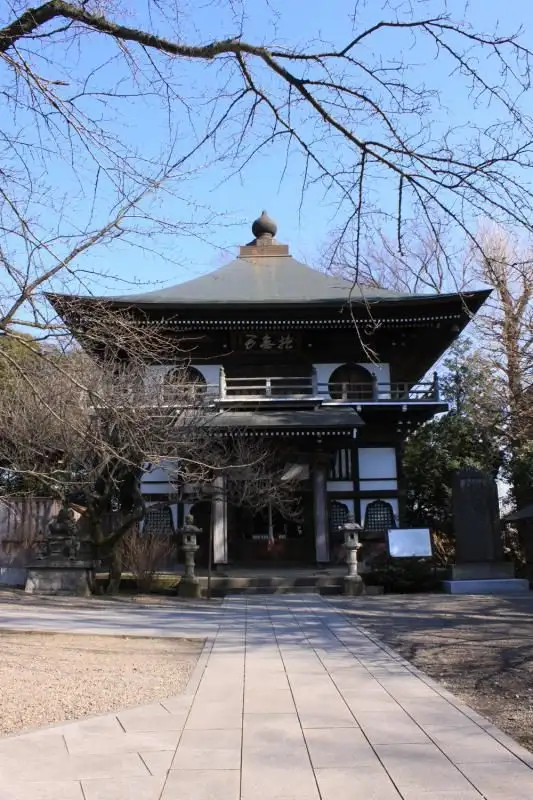
Stay
セントラルホテル取手
Sentoraru Hotel Toride
Hotel in Toride; 3-minute walk from Jrtoride Station.
東横ＩＮＮ取手駅東口
Toyoko INN Toride Eki Higashiguchi
Inn in Toride with breakfast available.
Dining
ビッグスマイル
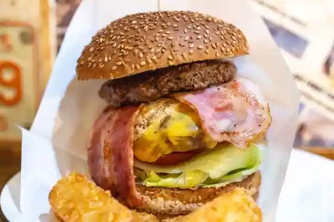
Biggusumairu
家系ラーメン 王道家 本店
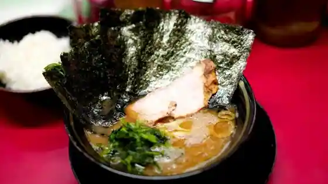
Kakei Ramen Odo Ie Hon
中華蕎麦 はざま
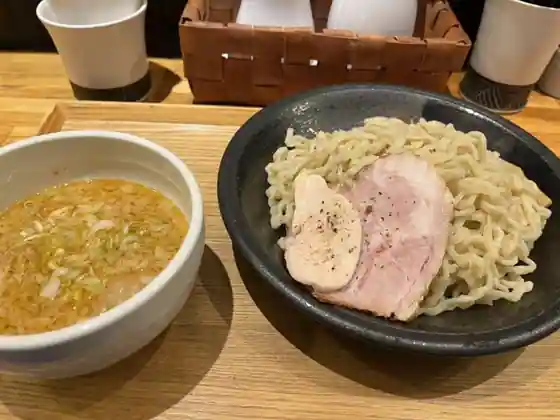
Chuka Soba Hazama
とんかつ とん心
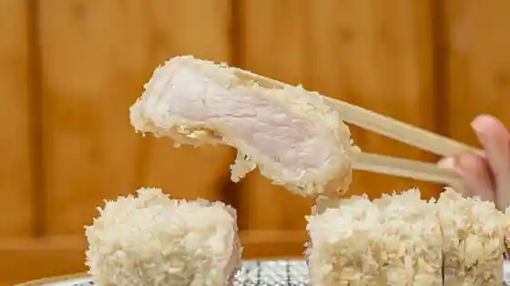
Tonkatsu Ton Kokoro
横浜ラーメン 一心
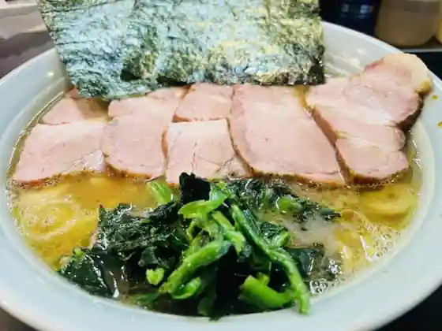
Yokohama Ramen Isshin
とんかつ･ハンバーグ専門店 やま忠
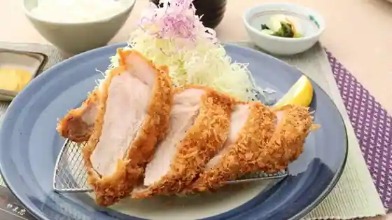
Tonkatsu Tonkatsu Hamburg Senmon Yama Tadashi
越後屋
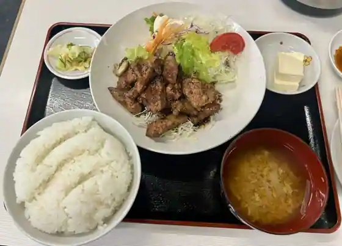
Echigoya
ちゃいなはうす
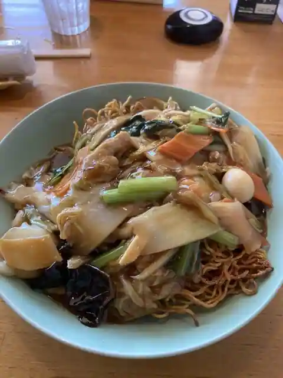
Chainahausu
蕎麦花
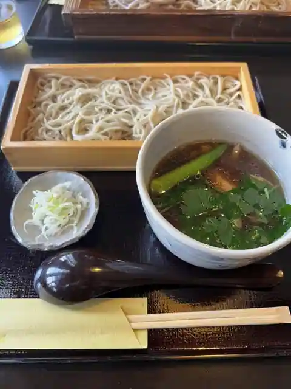
Soba Hana
たばち亭
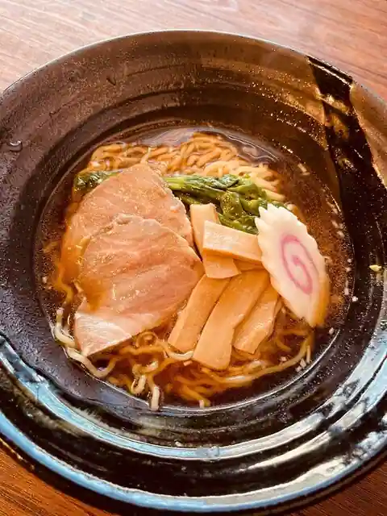
Tabachi Tei
ハリオン 取手店
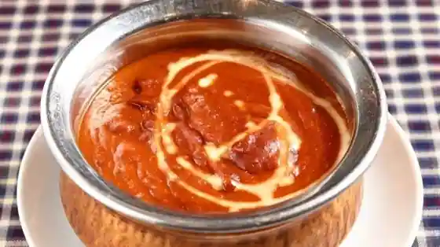
Harion Toride
手挽手打そば かしむら
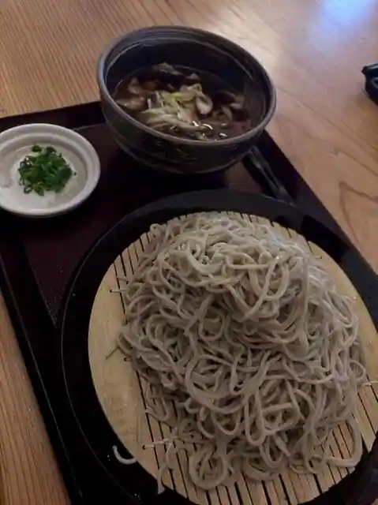
Te Ban Teuchi Soba Kashimura
丸八食堂
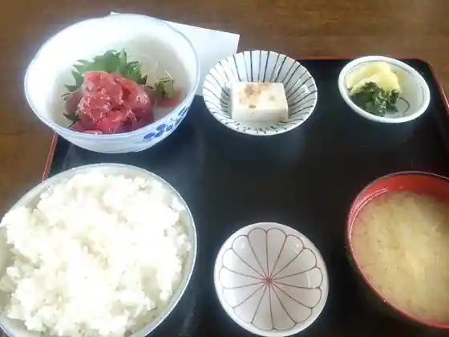
Maruhachi Shokudo
喜多方ラーメン坂内 取手店
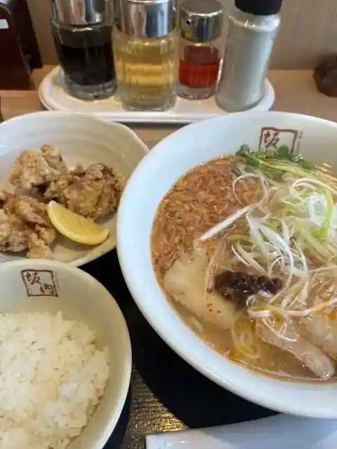
Kitakata Ramen Sakauchi Toride
さつま 本店
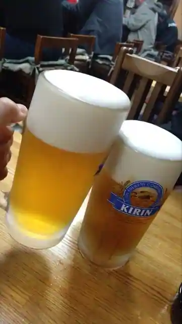
Satsuma Hon
ちゅら食堂 取手店
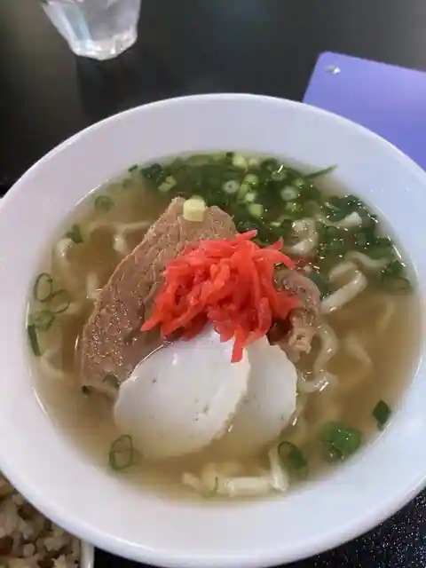
Chura Shokudo Toride
山下家
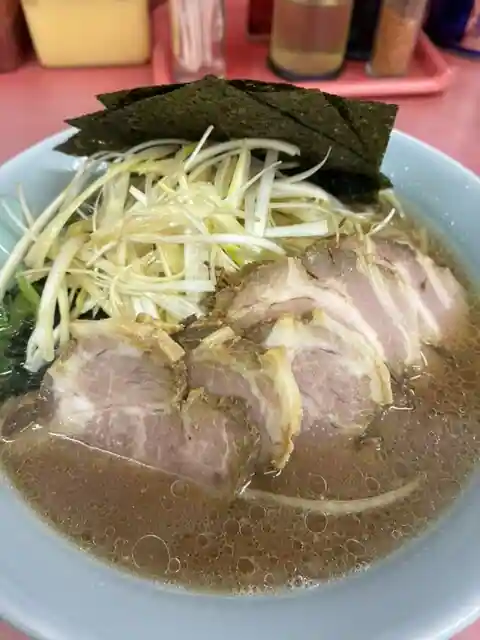
Yamashita Ie
山口屋
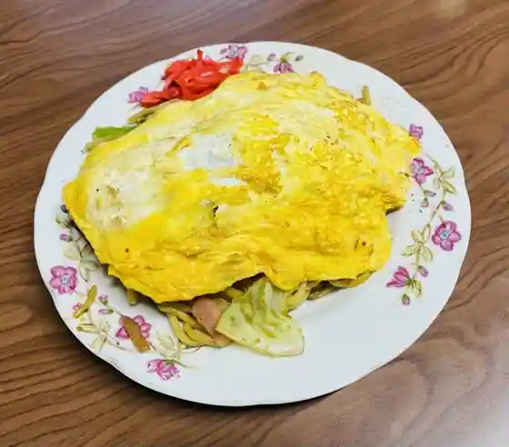
Yamaguchi Ya
カンパーニャ 本店
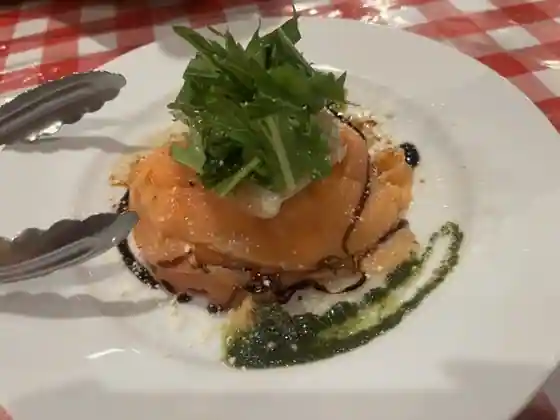
Kanpanya Hon
Kitchen Gon
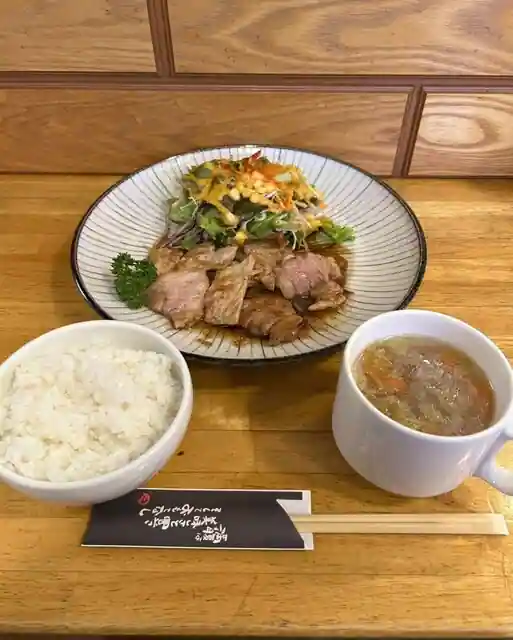
Kitchen Gon
リヨン わかば
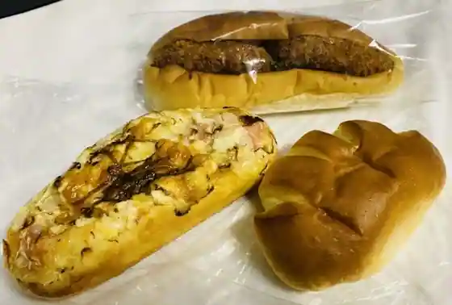
Riyon Wakaba
ひたちや
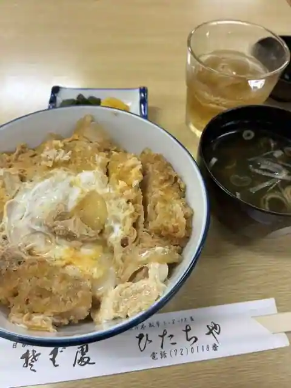
Hitachiya
中国料理茶寮
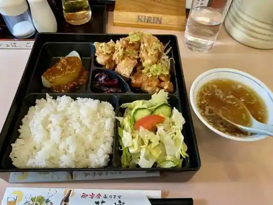
Chugokuryori Charyo
七富来や
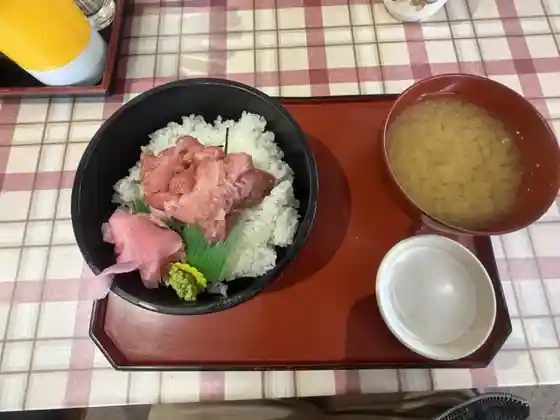
Shichi Togi Ya
Sights
Kirimbiiru Toride Kojo
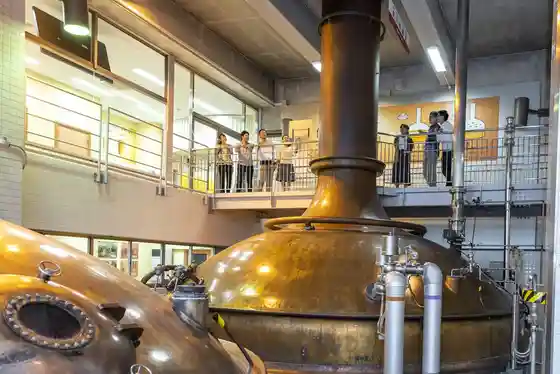
Ajia Toride Kantorii Kurabu
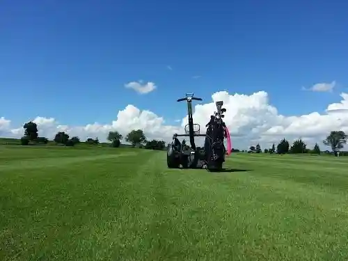
Toride Yado Honjin (Someno Ie)
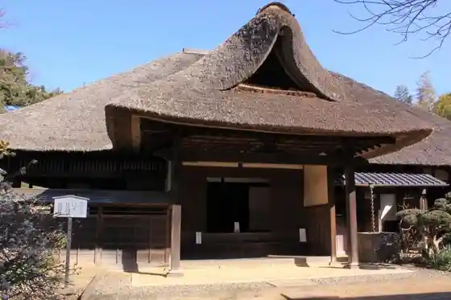
Cho Zendera Sansei Do
Shiina Beika
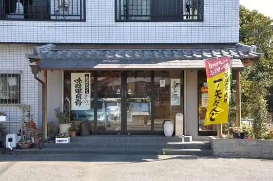
Kobori no Watashi (Ohori no Watashi)
Soba Tokoro Kosho Iori
Toride Keirinjo
Tozen Tera Kannon Do Yamato
Toride Maizo Bunkazai Center
Tanaka Shuzo Mise
Honda Sakuzaemon Shigetsugu no Haka
Toride Atogyararii ” Kirari ”
Hakusan Kakurembo
Tsukemono Sanchu Ya